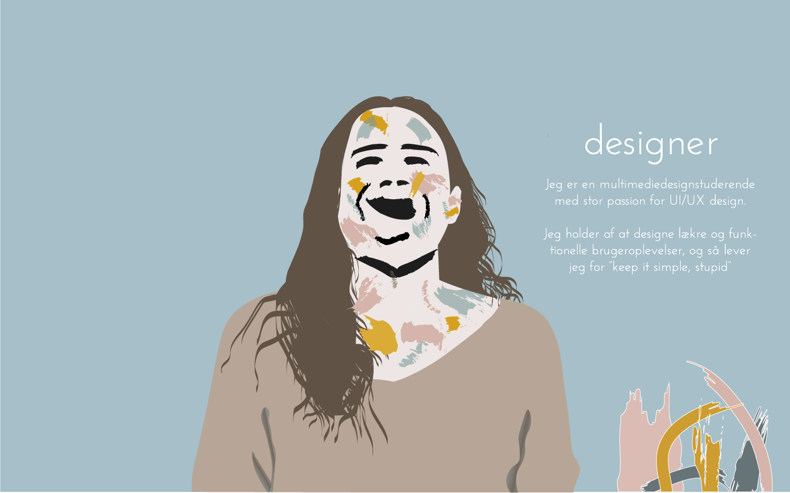

Fridgebuddy - En webapp som hjælper til bedre overblik, inspiration til madlavning og påmindelse om indkøb
En sommerkampagne for Hjem-IS, som skal genoplive de følelser og minder man forbinder med isklokken og de lyseblå biler
youSee musikquiz er en interaktiv brugeroplevelse, der skal lokke flere publikummer til sportsevents
En webdokumentar om to elever på Eriksminde efterskole, der skal tiltrække flere drenge til skolen
Et informationssite om Aarhus Havnebad med fokus på brugernes behov, fotografering og billederedigering
Et website til den nystartede virksomhed, Vinoriginalen, med fokus på storytelling og visuel kommunikation
Et produkt, udviklet efter mobile first paradigmet, med en interaktiv user experience med lyd og fortællinger
Eksempler på mine Illustrationer, som jeg har lavet i Adobe Illustrator
Eksempler på Motion Graphics, som jeg har lavet i Adobe After Affects
Jeg har udviklet en informationsside for Hjemis, som skal fungerer som en sommerkampagne. Jeg udviklede et nyt visuelt design til Hjem-IS, med stort fokus på at bevare historie og tradition for at bibeholde brandets stærke genkendelighed. I forbindelse med sommerkampagnen designede jeg også et nyt transportmiddel: Hjemis-cyklen, for at medvirke til mere omtale og reklame. I mine illustrationer har jeg arbejdet med rene linjer, skarpe kanter og lyse farver.


youSee Musikquiz er en interaktiv brugeroplevelse, der er udviklet til at underholde tilskuere til et sportsevent, før, under og efter eventet. Konceptet omkring musikquizzen er at brugeren skal vælge en musikgenre at quizze i. Herefter skal brugeren begynde at jonglere med fodbolden for at få musikken til at spille, og så gætte det rigtige svar på skærmen.

Webdoc’en er en oplysende platform, der skal vække lysten hos drenge til at besøge Eriksminde Efterskole, igennem nuværende elevers egne fortællinger. Vi har udarbejdet en legende og overraskende webdoc, som indeholder hurtig og let information i et kreativt design, rettet mod drenge. Sitet vækker også nysgerrighed og opmærksomhed gennem det legende design og interaktionen gennem video og lyd.

Vi har udviklet et website til Havnebadet, da de på daværende tidspunkt, ikke havde en eksisterende hjemmeside. Websitet er lavet på baggrund af deskresearch og feltarbejde med fokus på at opfylde brugernes behov om information på siden. Heriblandt information om åbningstider, faciliteter og events. Dette indhold vises gennem tekst og egne fotograferede fotos.

Vinoriginalen er en nystartet virksomhed som mangler en online tilstedeværelse og visuel identitet. Derfor udviklede vi et informationssite med elementer fra en webshop, og en designguide til virksomheden. Websitet fokuserer på storytelling gennem billeder og en fortællende stil og tone. Siden præsentere virksomheden, dens vine og historien bag hele konceptet.

Kunsthal Aarhus er et lille museum i Aarhus, som vi ønskede at tilføre noget mere. Vi oplevede et behov for mere information, men generelt også en bedre fortælling ift. udstillingerne. Derfor udviklede vi en prototype efter mobile first paradigme, som ville kunne bruges når man besøger kunsthallen. Den tilføre en ekstra dimension via. lyd og et interaktivt kort med fortællinger om udstillingerne, når man vandre rundt på museet.

I forbindelse med mit studiejob har jeg skulle udvikle grafisk materiale til Vimavima. Derfor kastede jeg mig ud i Motion Grafics, da det er hurtigt og let informationsmateriale, som kan bruges på tværs af alle digitale medier